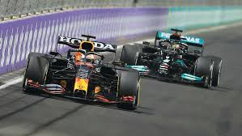
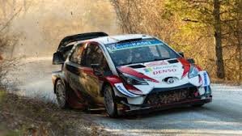
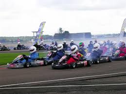
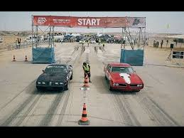

מכוניות בעלות מושב יחיד הן בדרך כלל מכוניות הספורט הקיצוניות והמהירות ביותר בעולם המרוצים, בעלות גלגל חשוף כלומר שאינו מכוסה על ידי גוף או שלדת המכונית סדרת המרוצים היוקרתית ביותר בקטגוריה זו היא הפורמולה 1 , במרוצי הפורמולה 1 משתתפות מכוניות בעלות נפח של עד 1600 סמ"ק עם הספק של כ- שבע מאות כוחות סוס , מנוע וי – 6 משקלי המכוניות נמוכים קצת מעל השש מאות קילוגרם , מורכבים מחומרים מרוכבים וסיבי פחמן
מרוצי ראלי הם מרוצים הנערכים בדרכים ציבוריות בתוואי לא מעגלי, תוואי המרוץ כולל בדרך כלל דרכים סלולות המכוניות המשתתפות עשויות להתבסס על מכוניות סדרתיות אך לא בהכרח, הן מכוניות בעלות הנעה כפולה מרוצים מטיפוס אחר המכונים ראלי ונערכים מחוץ לדרכים סלולות הם מרוצי פשיטת הראלי. עקרונות המרוץ דומים לראלי שהוצג לעיל בכך שנעשה שימוש בשטח ציבורי ובכך שמוגדרת נסיעה מנקודה לנקודה. השוני הוא בנסיעה בתוואי בלתי מוגדר מראש, לעיתים ללא שביל ברור, כך שהמתחרים מנווטים את דרכם לנקודת הביקורת הבאה במגוון דרכים. במרוצים אלו משתתפים בדרך כלל במעורב כלי רכב מסוגים שונים
מירוצי הקארטינג נערכים במסלולים סלולים מעגליים וקטנים באופן יחסי , אורך רכבי המרוץ הוא כמטר וחצי ורוחבם כמטר. הם מצוידים במנועים קטנים של עד 200 סמ"ק ולעיתים אף ללא תיבת הילוכים המהירויות המרביות הן בדרך כלל עד כ-150 קמ"ש בלבד, אך תוואי המסלול בעל הפניות הצפופות מפעיל על הנהג כוחות צד גבוהים באמצעות צמיגי הסליקס שמספקים אחיזת כביש גבוהה מרוצי הקארטינג משמשים לעיתים נהגים צעירים ואף ילדים העושים את צעדיהם הראשונים בעולם המוטורי
מרוצי דראג הם מרוצים המתקיימים בקו ישר לאורך מרחק קצר, בדרך כלל 400 מטר. התחרות היא תמיד בין שני כלי רכב המתחרים זה לצד זה. המנצח מתקדם לשלב הבא. המכוניות המשתתפות נעות בין דגמים סדרתיים לבין מכוניות ייעודיות למשימה. המכוניות הייעודיות הן בעלות מראה חריג של גלגלי ענק בציר האחורי וגלגל זעיר בציר הקדמי. אורך מכונית ייעודית עשוי להגיע לכ-10 מטר והספק המנוע מגיע לאלפי כוח סוס. המנוע מתודלק בתערובות דלק מיוחדות ומאיץ את המכונית ממצב עמידה למהירות של 100 קמ"ש תוך חצי שנייה וכ-500 קמ"ש תוך 5 שניות. לשם בלימת המכונית בסיום המרוץ משתמשות המכוניות במצנחים נפתחים
